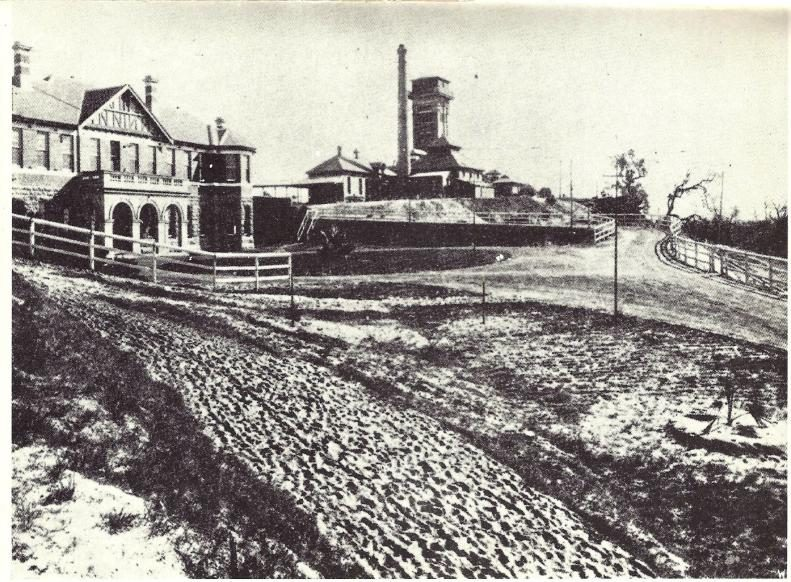
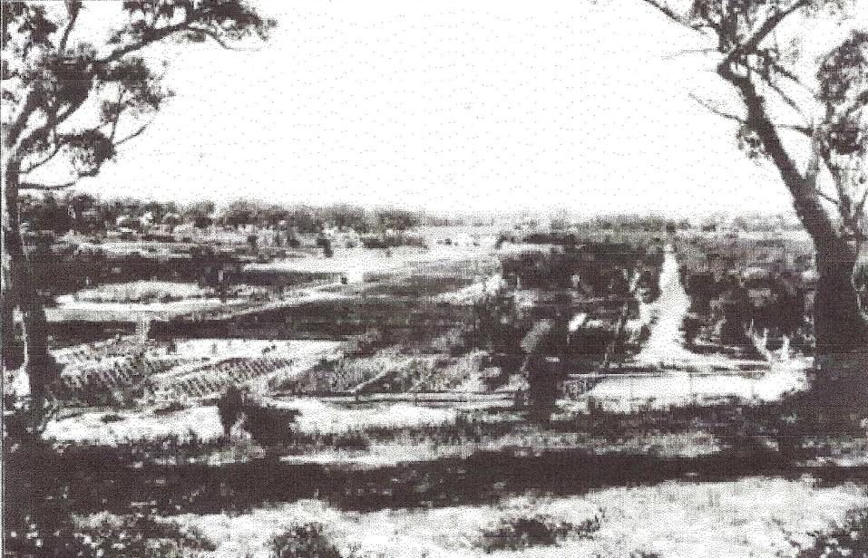
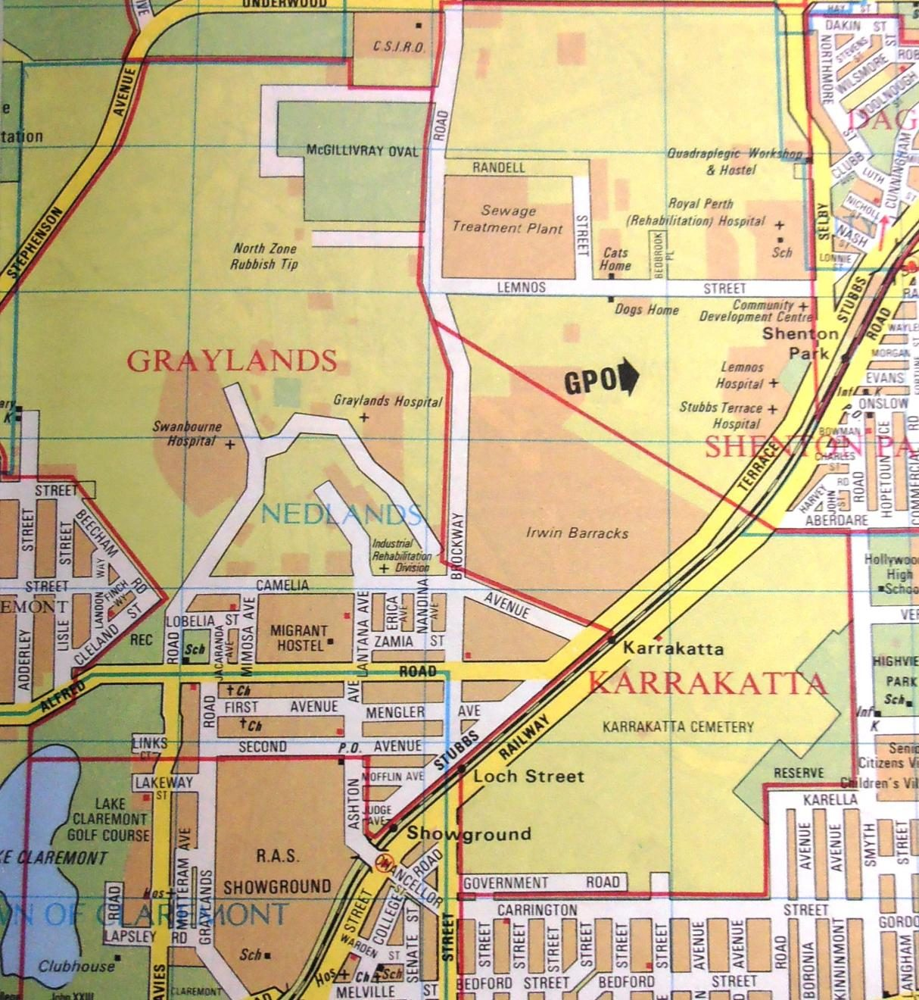
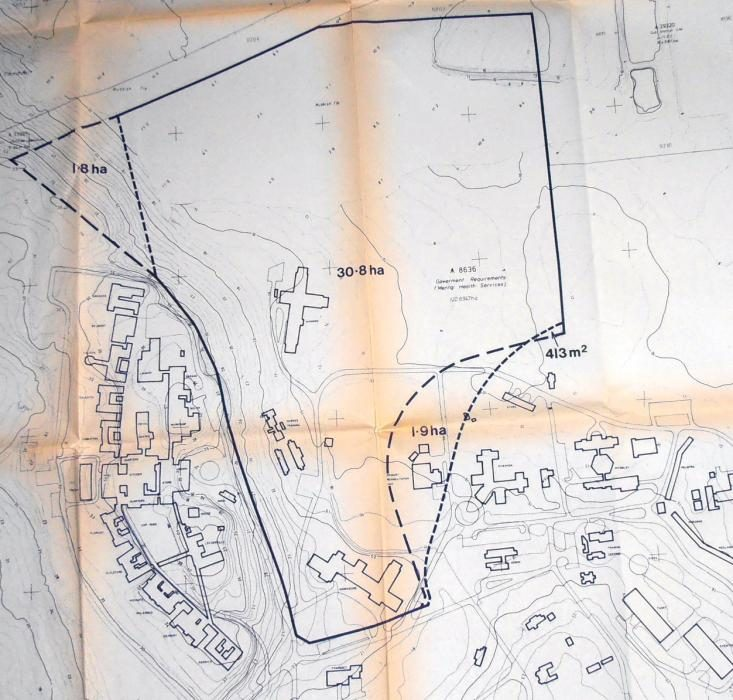
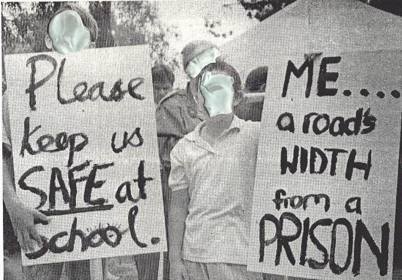

This isn't the first time Graylands has changed
This site has changed before, and this community responded before. What follows is the documented history — sourced to an independently examined university thesis, the State's own heritage record, and government's own 1993 statements — not a claim that history repeats itself, but the record this generation of residents and John XXIII parents inherits, and the reason this particular change is a different kind of thing to anything that came before it.
A place with a long memory
Graylands has been part of this suburb's story since before the suburb had its current name. Building began in 1901, with patients transferred progressively from the overcrowded Fremantle Asylum as new wards were completed; the transfer was complete by 1909 Mikus, 2013, p.36. The choice of location was deliberate, and openly recorded: historians Bolton and Gregory describe it as chosen because it was "healthy, accessible to the city, but far enough from built-up areas not to cause distress or offence to susceptible citizens" Mikus, 2013, p.36. It was, in other words, chosen for its isolation. Everything that has happened since — a migrant hostel, a teachers' college, a private school, and a suburb now among Perth's most sought-after — has moved in around a site that was never relocated, never redesigned for its new context, and is now being asked to do something categorically different from what it was built for.

The approach to the hospital, 1912
Three years after opening. An unsealed road, open paddock on both sides — the isolation the site was chosen for, visible.
Courtesy of Western Mail, reproduced in Mikus, 2013, p.37.

The view from the area, 1913
Market gardens and open land where dense suburban housing now stands. The suburb grew up around the hospital, not the other way round.
Reproduced in Mikus, 2013, p.34.
The State itself recognises what's here. Graylands Hospital — Fortescue House and the surrounding heritage buildings — is on the State Register of Heritage Places (registered 20 September 2002) and the City of Nedlands' own Heritage List, Category B: "worthy of a high level of protection... a more detailed Heritage Assessment/Impact Statement to be undertaken before approval given for any major redevelopment." The Heritage Council's own statement of significance describes the site as holding "significant aesthetic, historic, social and representative cultural heritage value," representative of changing approaches to mental health "since it was first built in c1908," with "approximately 90 years of continual service to Mental Health in Western Australia" State Heritage Office, inHerit database, Place No. 13630. This isn't only a resident's concern about a neighbour. The State's own heritage framework already says this site carries a history worth protecting, and a redevelopment of this size is precisely the kind of change that framework says should trigger a formal heritage impact assessment before approval — a document this campaign has not identified as published. See Concern 7, Environmental and heritage →
1993: the last time this changed, and what the community did about it
By 1980, the site was already changing shape. Six forensic and thirty-two acute care patients were transferred into new Graylands wards that November — the first documented forensic presence on the site in its modern form Mikus, 2013, p.39. In 1985, the government sold part of the former hospital land for a new Catholic school; John XXIII College occupied the site the following year State Heritage Office, inHerit database. Even then, proximity wasn't an afterthought: in 1983, professional planning consultants were commissioned to map the relationship between the proposed school site and the hospital buildings beside it — a formal, surveyed exercise, at a scale most residents will never have seen.

The suburb in 1980
Graylands Hospital, Swanbourne Hospital and the Migrant Hostel, all within the same few streets — years before John XXIII College or the Frankland Centre existed.
Perth Metropolitan Street Directory, 1980, reproduced in Mikus, 2013, p.1.

The 1983 proximity survey
Professional planners mapped the exact relationship between the proposed school land and the hospital buildings — for a general hospital roughly a third the size of what's proposed now.
Feilman Planning Consultants, 1983, reproduced in Mikus, 2013, p.70.
In 1989, the State Government decided to build a dedicated maximum-security forensic unit at Graylands — a categorically different proposition from the general hospital the school had moved in beside three years earlier. The reaction was immediate and organised. John XXIII parents formed a Parents' Action Group, raised a fighting fund, ran a media campaign, and lobbied Members of Parliament. In April 1991, around ninety parents and students picketed a nearby land auction; other objectors argued the unit should be built at Casuarina Prison instead — the same co-location model this campaign points to today Mikus, 2013, pp.39–40. This wasn't a fringe reaction. The State's own heritage record describes the Frankland Centre opening "amidst much public outrage at the siting of a maximum security unit in the middle of what had over the years become a very affluent near-city suburb" State Heritage Office, inHerit database — government's own account, not this campaign's characterisation.

Construction went ahead. Consultation went ahead too. Organised objection did not stop the Frankland Centre being built — that's the honest part of this history, and this campaign isn't presenting 1991 as a template for what protest alone can achieve today. But it also did not stop government from treating the objection as legitimate. Before the unit opened, Health Minister Peter Foss made a public, on-the-record promise: "I promised that no category of patient would be moved into the Frankland Centre until the community had been consulted about the proposed guidelines which would control the admission of forensic patients, and I stand by that promise." Government then ran a real, dated, multi-channel process — newspaper advertisements, information to the news media, and letters and pamphlet drops to interested parties, with a published deadline of 30 November 1993 for comment WA Government media statement, 10 Oct 1993.
That's a proportionality point, not just a precedent. Government has already judged, once, that a change at this site was significant enough to owe the community a real, dated, advertised process — and that change was a single 30-bed unit added to a hospital that kept running everything else it already did. What's proposed now is larger by an order of magnitude, and it isn't an addition — it replaces the institution. If the smaller change cleared that bar, it's hard to see why the larger one wouldn't. See Concern 6, Consultation →
What happened after — and the question hindsight raises
This campaign has separately documented, in detail, the safety record compiled since Graylands began operating as a forensic site: absconding frequency, security-level transition failures, a diagnostic judgement that proved fatal, and the comparable records at Bennett Brook, Cumberland Hospital and Thomas Embling elsewhere in Australia. None of it is repeated here — the full record is in Concern 1, sourced and dated, and this page isn't the place to re-argue it.
What belongs here is the question that record raises when it's read next to this page's history rather than on its own. The 1983 proximity survey was the last time anyone appears to have formally examined how this site's boundary interacts with its neighbours. Everything documented since then — the incidents, the legal changes, the site's own growth — has happened without that examination being repeated. A reasonable planner, looking back with the benefit of everything now on the public record, would at minimum ask the question this campaign is asking: knowing what's happened since, and knowing what's now proposed, has anyone gone back and checked whether this is still the right location? Not "was it wrong in 1903, or 1993" — it may well have been reasonable both times, on what was known then. The question is whether it's been checked since, against what's known now.
Why this time is a different kind of change
It would be easy to hear this history and conclude that objecting has never worked, so it isn't worth doing again. That conclusion doesn't follow, for two reasons specific to what's being proposed now.
1993 added. 2026 replaces. The Frankland Centre was a 30-bed unit added to a general psychiatric hospital that continued operating everything else it already did. The current proposal is not an addition — it is the closure of every general psychiatric bed on the site and the conversion of the entire campus to forensic use, taking the site from roughly 45 forensic beds today to 176, all forensic, nothing general remaining See The Issue for the full scale comparison →. A category of hospital that has served this community for over a century is not being expanded. It's being ended, and replaced with something else, on the same ground.
1993 was a lockup. This is meant to be something else. The Frankland Centre operated as a secure, custodial unit under the law that existed at the time. The Criminal Law (Mental Impairment) Act 2023 changed the legal model entirely: fixed limiting terms rather than indefinite detention, and a statutory pathway toward supervised community leave and reintegration, on a legislated timetable rather than purely clinical discretion See what the CLMI Act actually changed →. Whatever the merits of that legal reform, it means the facility being proposed for this site in 2026 is not simply a bigger version of what was built in 1993. It is designed, by law, to have an active interface with the surrounding community that the 1993 model never had. That is precisely the kind of change the 1983 proximity survey never contemplated, and precisely the kind of change no published document shows has been re-examined since.
This is worth standing up for
If you're a John XXIII parent reading this: your school did not choose to sit beside a maximum-security forensic campus. It chose, in 1986, to sit beside a general hospital — the same choice thousands of families have made about schools near hospitals everywhere. What's changed since is not your school's decision. It's the site's purpose, twice over, without your community being shown the same courtesy government showed the last time this happened. The parents who stood in front of a land auction in 1991 were not wrong to care, and neither are you.
A community that has lived beside this institution for over a century, through every change so far, is owed the same transparency and the same chance to be heard that government itself extended in 1993 — for a change a fraction of this size. That's the standard already set, at this exact address, by the people who built this place. Meeting it isn't a concession to residents. It's what government has already decided a change like this requires.
Sources for this page: Pamela Mikus, "Graylands: The Evolution of a Suburb" (Honours thesis, Murdoch University, 2013) — the full thesis is available here for anyone who wants to verify any of this directly, rather than take this page's word for it; the State Heritage Office's inHerit database, Place No. 13630; and WA Government media statements from March and October 1993. Full source list →